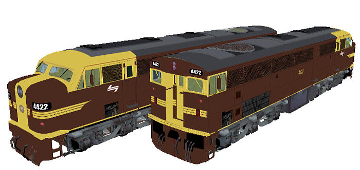

44 Class Diesel Locomotive (NSW)
original 3d model design by Diego Rivera
Textures by Richard Lauder
Physics by team-ALCO
Overview
Package contains fourteen: one each cab-end leading and one number two end (flat end) leading:
- 4422 Tuscan PTC NSW;
- 4424 Reverse Tuscan PTC NSW;
- 4429 Tuscan as delivered NSWGR;
- 4470 SRANSW Red;
- 4483 FreightCorp;
- 4489 SRANSW Red Terror;
- 4496 SRANSW Candy;

More screenshots below.
These models contain enhanced friction, braking and resistance parameters by Team-ALCO, specifically by Ian Bowles.